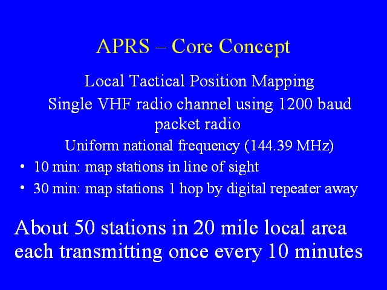

Notes:
The core original concept behind APRS is local position mapping. On a single VHF frequency, a local APRS network can accomodate about 50 stations in a local area, with each station transmitting its position once every 10 minutes.